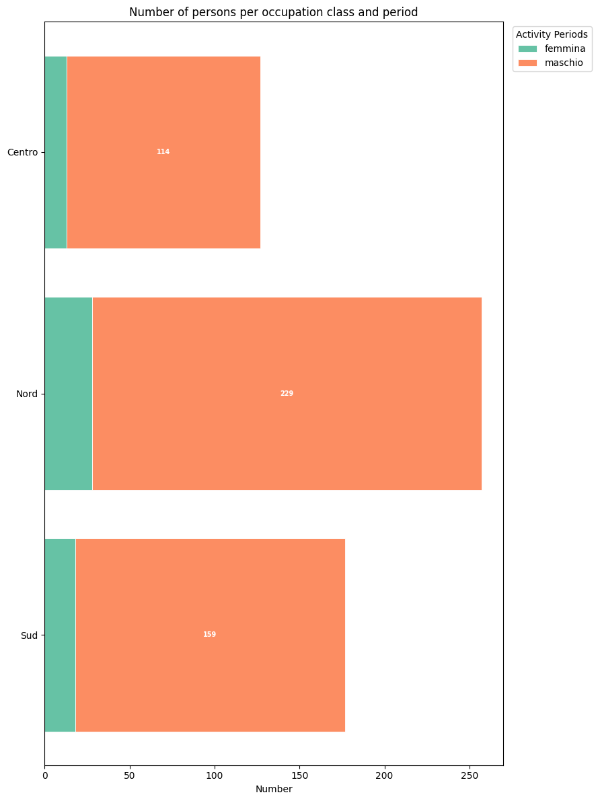
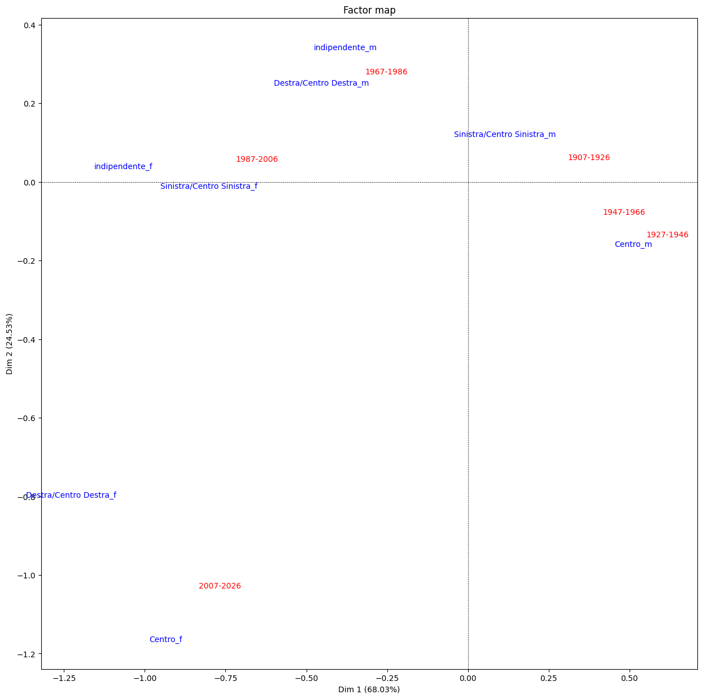
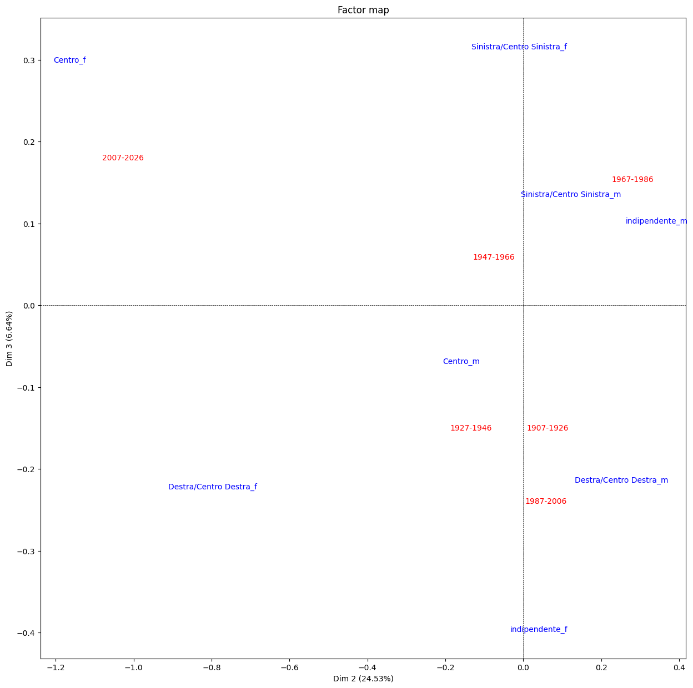
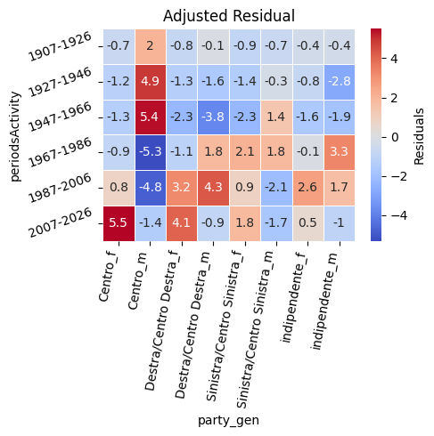

Corrispondence Analysis through Party's Affiliation
If the population' numbers limitate the analysis, then some interesting insights can be done through the other individual's properties. Searching between the most represented categories (ministers all properties) one with satisfing data is "member of political party".
Data's Cleaning
The political situation of parties in Italy is complex; after the change from the First to the Second Republic in the 90's, there's been an increase of birth of several new small parties, or old parties that changed names. To meet the lack of clean information from wikidata regarding the government mandates, I created the property "periodsofActivity" by adding +35 years to the birthYear and dividing them into group of 20 years, to prevent the dispersion of information due the small number of individuals.
Because a Corrispondence Analysis can be uneffective the more categories there are for a single variable, a grouping of parties was needed, and it was made by dividing them in three macro-categories: Left/Centre-Left Parties, Centre Parties, Right/Centre-Right Parties.
For classifying each party in one of the categories were used the information available in wikipedia, because the core-data that are being used for this analysis come from wikidata in the first place.
For the same reason the "Place of Birth", instead of making use of the Regions, it was grouped into three: North, Centre, South; where the two islands, Sicily and Sardinia, were counted as South. As for the "member of a political party" the information for the classifying were gathered from wikipedia.

Evolution of Party's Influence
The small number of individuals prevent us from doing a full Corrispondence Analysis, mainly because the Chi-Square Test would fail, but what can be of interesting is following the evolution of Parties' representation in the governments in correlation with gender,through time.


Heatmap

Thanks to the heatmap we can see a strong period for Centre parties during the First Republic, probably due to the presence of Democrazia Cristiana that had the majority in the parliament for several consecutive governments; while in the last period there's been a rise of parties from the Right/Centre-Right and a return of the Centre.
But what is of great interest in this last picture is that the rise of these two wings was also hand-by-hand with the rise of women from these parties in the last two decades.